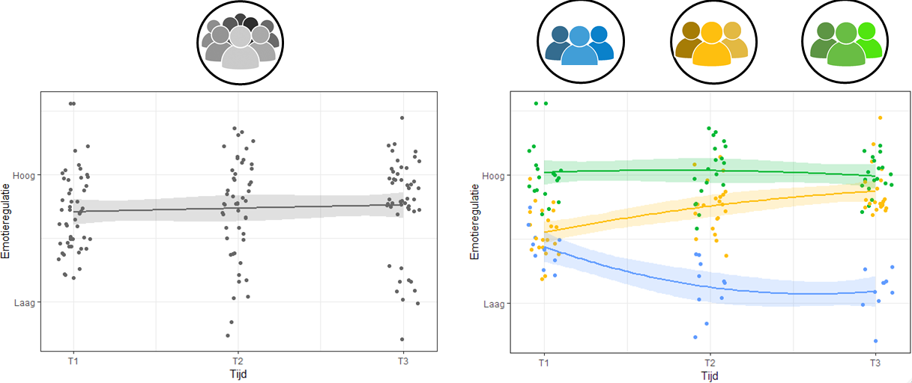
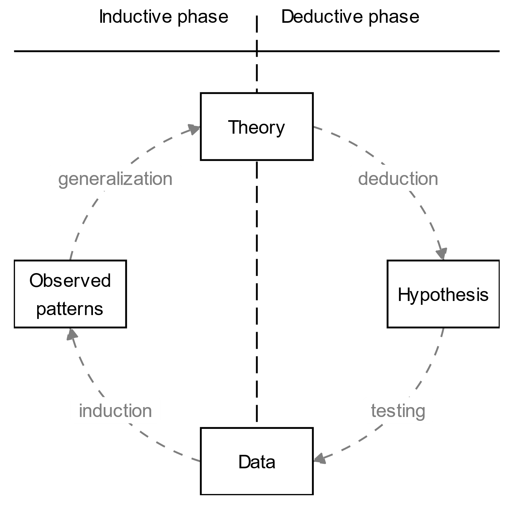
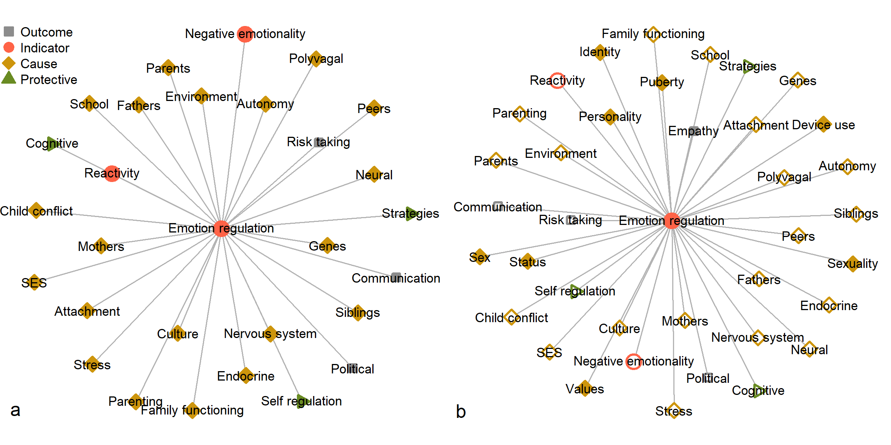
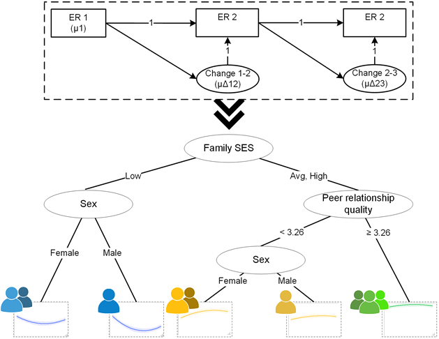

Machine Learning can Advance Theory Formation in the Social Sciences
Funded by NWO Veni grant VI.Veni.191G.090
doi:10.1002/icd.2370
Caspar J. Van Lissa
Tilburg University, dept. Methodology & Statistics
Central thesis
Machine learning can help advance theory formation in the social sciences
- Replication crisis (Scheel 2022; Lavelle 2021)
- Current solutions improve deductive research (theory-testing)
- preregistration (Peikert, van Lissa, and Brandmaier 2021)
- replication
- questionable research practices (Wicherts et al. 2016)
Many preregistered hypotheses are not supported (56%) (Scheel, Schijen, and Lakens 2021)
- Lack of “good theories” another explanation for replication crisis
Defining theory
Theory: A model that describes the nature of relations between several phenomena in sufficient detail that it allows for the derivation of quantifiable hypotheses that can be subject to (severe) testing.
- Most social scientific theories are:
- insufficiently precise
- too flexible
- Compare to Walasek, Frankenhuis, and Panchanathan (2022)
Why do we need theory?
- Useful as an instrument of cumulative knowledge acquisition
- Communicating social scientific research to its consumers
Deduction vs induction
- Empirical cycle (de Groot 1961)
- Lack of theory cannot be overcome by improving deductive practices
- Theory formation requires inductive (exploratory) research (Creswell and Clark 2017)
Rigorous exploration
How can we improve exploratory research?
- Confirmatory methods poorly suited to exploratory research
- p-values: 5% Type I error prob is consistent with 14-50% false discovery rate (Vidgen and Yasseri 2016)
- Depending on prior probability of hypotheses being true
- Model fit indices: manually specify models, no guarantee that best model is in set
- Role of flexibility: there are infinite ways to explore
- “unguided exploration” is effortful and inflates the risk of spurious results
Machine learning
Machine learning:
- automated model building
- checks and balances to prevent overfitting
- maximize predictive performance and generalizability of results
Psychology can benefit from its superior predictive performance (Yarkoni and Westfall 2017)
NEW: Epistemological implications of ML for theory formation (Van Lissa 2022)
Machine learning vs unguided exploration

Phenomena detection
First step in Theory Construction Methods is identifying relevant phenomena (Borsboom et al. 2020)
- Phenomena: stable features of the world reliably evidenced by patterns in data (Woodward, 1989)
Machine learning (van Lissa 2021)
- Unsupervised learning method
- Clusters in keywords and abstracts
Holistic approach
Every study examines only a piece of the puzzle; we never see the complete picture
Machine learning accommodates more predictors than classical methods
- Regularization
- Variable selection
Including all relevant predictors is important:
- Good theory incorporates most important causes
- Cannot assess the relative utility of predictors across studies
- Include potential predictors from various theories, and undertheorized factors
Complex effects
Many machine learning methods accommodate:
- non-linear effects
- higher-order interactions, without having to specify the nature of these effects a-priori.
- Automatic: tree-based methods
- Manual: penalized methods
Social scientific theories rarely account for complex effects
- Machine learning can provide nuance by revealing them
Theoretical elements
Some machine learning methods incorporate theoretical elements
- E.g.: assumption that development follows a latent growth curve (LGC).
- SEM forests (Brandmaier et al. 2016)
- regularized SEM (Jacobucci, Grimm, and McArdle 2016), (Ernst & Peikert 2022)
When the theory is a (nomological) network:
- LASSO-penalized Gaussian graphical model (GGM) (Epskamp, Rhemtulla, and Borsboom 2017)
- E.g.: network theory of major depression (Cramer et al. 2016)
All of these methods allow for theory guided exploration using machine learning
Person-centered approaches
Explain heterogeneity at a more fine-grained level than the whole sample
- Unsupervised learning methods
- Group individuals to maximize homogeneity of some outcomes
- “Which individuals are similar?”
- Non-parametric (e.g., K-means) and model-based (e.g., LCA)
- Tree-based models
- Group individuals by predictors to maximize homogeneity of outcomes
- “Why are these individuals similar?”
- Mixed-effects / multilevel models
- Often model but rarely explain heterogeneity in within-person effects
- Regularization (e.g., regularized SEM)
Generalizability
When using data models to guide theory formation, generalizability is essential (Haslbeck et al. 2021)
Checks and balances to curtail overfitting
- cross-validation to estimate predictive accuracy (Hastie, Tibshirani, and Friedman 2009)
From models to theory
Naive interpretative approach
- Variable importance metrics
- congruent with theoretical assumptions about important predictors?
- any theoretically important predictors rank low?
- any undertheorized factors rank high?
- Marginal associations
- non-linear effects?
- high importance but flat marginal association?
Comparing predictive performance of simpler parametric model that represents these ‘insights’ to machine learning model
From models to theory 2
Data models -> formal theory (Haslbeck et al. 2021)
- Abductive formal theory construction (AFTC) framework
- construct formal theory
- Generate data
- Mathematically compare to empirical data
- like a posterior predictive check in Bayes
- Discrepancies: amend formal theory
Example: TMSR
- Text Mining Systematic Review
- First step in theory development: identifying relevant phenomena (Borsboom et al. 2020)
- Often done by systematic review
- Narrative reviews: small samples, confirmation bias, emphasize positive results (Littell 2008)
- Introducing text mining systematic review (TMSR) (van Lissa 2021):
- Unlimited sample size, transparent, objective, reproducible
6653 papers on emotion regulation in adolescence [age 10-24]
Open science
All code and data available at https://github.com/cjvanlissa/veni_sysrev
Workflow for Open Reproducible Code in Science (WORCS) used to make analyses reproducible (Van Lissa et al. 2020)
Design
- Manually construct baseline network from relevant theory and prior reviews
- Identify which constructs co-occur in papers
- Use POS-tagging to identify nouns and adjectives
- Use (Google pagerank-based) TextRank to identify bigrams
- Use regex dictionary to cluster terms
- Frequency -> Relevance
- Co-occurrence in publications -> Potential association
- Compare co-occurrence networks to baseline network
Baseline network
Phenomena relevant to adolescents’ emotion regulation according to theory(a) and narrative reviews (b; transparent nodes indicate constructs also present inthe theory).
- Theory (b) narrative reviews; transparent nodes indicate constructs also present in theory.
Co-occurrence graph

Author keywords (a) and abstracts (b)
Results
- TM analyses retrieve constructs from theoretical literature
- Especially pertaining to neurodevelopment and socialization
- This suggests validity
- Substantial correspondence between keyword and abstract network
- This suggests reliability
- Networks are sparse; few connections among constructs:
- Fragmented literature, as noted by prior reviews
Undertheorized themes
- Developmental disorders
- Physical health (sic)
- External stressors
- Structural disadvantage
- Addictive behavior
- Identity and moral development
- Sexual development
Implications
- Empirical research relies on theory; under-theorized phenomena may be overlooked
- TMSR offers guidance for phenomena to consider as confounders/causes
- Unembedded terms indicate promising areas of future research
- TMSR network can serve as proto-theoretical nomological network
Example: Predictors of Development
- What are important predictors of adolescents’ ER development?
- What is the nature of the association of the predictors with the trajectories?
- 497 Dutch adolescents (283 boys; age at T1: M =13.03, SD = 0.46)
- Predictors: 87 (Demographics, Biological, Individual differences, Risk behavior, Relationship quality, Parenting, Conflict resolution styles)
- Outcome: Difficulties in emotion regulation (Gratz and Roemer 2004)
- Code and synthetic data: https://github.com/cjvanlissa/veni_forest
SEM Forests
Method
SEM-forest (Brandmaier et al. 2016)
- Bootstrap sample
- On each sample, estimate a SEM-model
- Consider \(k\) candidate predictors
- Identify predictor and value that maximizes \(LR\) of post-split multi-group model
- Average predictions across bootstrap samples
We used 1000 bootstrap samples, \(k = 9\)
Relation to other methods
- Predictors of latent growth model?
- Only linear differences, few predictors (power)
- Multigroup latent growth model?
- Non-linear differences, but only one moderator
- Latent class growth model with auxilliary variables?
- Groups with regard to trajectory, not predictors
- SEM forest
- Groups with regard to trajectory, based on predictors
Results
- Best predictors: Personality and conflict resolution behavior
- Negative parenting more predictive than other positive practices
Less important than expected:
SES
Bullying/victimization
Delinquency
Substance use
Monitoring
Many predictors show non-linear effects
Limitations
- Problem of induction
- Causal inference
Induction
It is impossible to logically induce general principles from specific data
- You may have unobserved counterexamples
- Multiple principles could be consistent with the same data
But it is possible to reason about general principles based on observed patterns in data data
- Popper:
- “there is no such thing as a logical method of having new ideas”
- “my arguments in this book are quite independent of [the problem of having new ideas]”
- Machine learning is one possible method for generating ideas inductively
Causal Inference
Machine learning finds patterns in data, irrespective of causality
- If you goal is prediction, this is fine
- But interpreting those patterns assumes causality
Be particularly mindful of:
- Conditioning on colliders
- Multicolinearity
See Pearl 2019
Conclusions
- Machine learning reveals blind spots in existing theory
- Missing constructs, relative importance, functional form
- ML can detect patterns in published research and primary data
- “Inductive methods” for consolidating insights into theory remain vague
- Theories are still verbal and flexible, how should they be updated?
- Ignoring causality limits interpretability of machine learning
- Incorrect direction of causality: meaningless results
- Conditioning on a collider: biased results
References
Van Lissa, C. J. (2022). Developmental data science: How machine learning can advance theory formation in Developmental Psychology. Infant and Child Development. https://doi.org/10.1002/icd.2370
Van Lissa, C. J. (2022). Complementing preregistered confirmatory analyses with rigorous, reproducible exploration using machine learning. Religion, Brain & Behavior. https://doi.org/10.1080/2153599X.2022.2070254
Van Lissa, C. J., Beinhauer, L., Branje, S., & Meeus, W. (2022). Using machine learning to identify early predictors of adolescent emotion regulation development. Journal of Research on Adolescence. https://doi.org/10.31234/osf.io/rbqf9
Van Lissa, C. J. (2021). Mapping Phenomena Relevant to Adolescent Emotion Regulation: A Text-Mining Systematic Review. Adolescent Research Review. https://doi.org/10.1007/s40894-021-00160-7
Van Lissa, C. J., et al., (2022). Using machine learning to identify important predictors of COVID-19 infection prevention behaviors during the early phase of the pandemic. Patterns, 3(4), 100482. https://doi.org/10.1016/j.patter.2022.100482
Borsboom, Denny, Jonas Dalege, Rogier A Kievit, and Brian D Haig. 2020. “Theory Construction Methodology: A Practical Framework for Building Theories in Psychology.” PsyArxiv. https://doi.org/10.31234/osf.io/w5tp8.
Brandmaier, Andreas M., John J. Prindle, John J. McArdle, and Ulman Lindenberger. 2016. “Theory-Guided Exploration with Structural Equation Model Forests.” Psychological Methods 21 (4): 566–82. https://doi.org/10.1037/met0000090.
Cramer, Angélique O. J., Claudia D. van Borkulo, Erik J. Giltay, Han L. J. van der Maas, Kenneth S. Kendler, Marten Scheffer, and Denny Borsboom. 2016. “Major Depression as a Complex Dynamic System.” PLOS ONE 11 (12): e0167490. https://doi.org/10.1371/journal.pone.0167490.
Creswell, John W., and Vicki L. Plano Clark. 2017. Designing and Conducting Mixed Methods Research. Third Edition. SAGE Publications.
de Groot, Adriaan D. 1961. Methodologie: Grondslagen van onderzoek en denken in de gedragswetenschappen. ’s Gravenhage: Uitgeverij Mouton.
Epskamp, Sacha, Mijke Rhemtulla, and Denny Borsboom. 2017. “Generalized Network Psychometrics: Combining Network and Latent Variable Models.” Psychometrika 82: 904–27. https://doi.org/10.1007/s11336-017-9557-x.
Gratz, Kim L., and Lizabeth Roemer. 2004. “Multidimensional Assessment of Emotion Regulation and Dysregulation: Development, Factor Structure, and Initial Validation of the Difficulties in Emotion Regulation Scale.” Journal of Psychopathology and Behavioral Assessment 26 (1): 41–54. https://doi.org/10.1023/B:JOBA.0000007455.08539.94.
Haslbeck, Jonas M. B., Oisín Ryan, Donald J. Robinaugh, Lourens J. Waldorp, and Denny Borsboom. 2021. “Modeling Psychopathology: From Data Models to Formal Theories.” Psychological Methods, November. https://doi.org/10.1037/met0000303.
Hastie, Trevor, Robert Tibshirani, and Jerome Friedman. 2009. The Elements of Statistical Learning: Data Mining, Inference, and Prediction. Second. New York: Springer.
Jacobucci, Ross, Kevin J. Grimm, and John J. McArdle. 2016. “Regularized Structural Equation Modeling.” Structural Equation Modeling : A Multidisciplinary Journal 23 (4): 555–66. https://doi.org/10.1080/10705511.2016.1154793.
Lavelle, Jane Suilin. 2021. “When a Crisis Becomes an Opportunity: The Role of Replications in Making Better Theories.” The British Journal for the Philosophy of Science, April, 714812. https://doi.org/10.1086/714812.
Littell, Julia H. 2008. “Evidence-Based or Biased? The Quality of Published Reviews of Evidence-Based Practices.” Children and Youth Services Review 30 (11): 1299–1317. https://doi.org/10.1016/j.childyouth.2008.04.001.
Peikert, Aaron, Caspar J. van Lissa, and Andreas M. Brandmaier. 2021. “Reproducible Research in R: A Tutorial on How to Do the Same Thing More Than Once.” Psych 3 (4): 836–67. https://doi.org/10.3390/psych3040053.
Scheel, Anne M. 2022. “Why Most Psychological Research Findings Are Not Even Wrong.” Infant and Child Development 31 (1): e2295. https://doi.org/10.1002/icd.2295.
Scheel, Anne M., Mitchell R. M. J. Schijen, and Daniël Lakens. 2021. “An Excess of Positive Results: Comparing the Standard Psychology Literature With Registered Reports.” Advances in Methods and Practices in Psychological Science 4 (2): 25152459211007467. https://doi.org/10.1177/25152459211007467.
van Lissa, Caspar J. 2021. “Mapping Phenomena Relevant to Adolescent Emotion Regulation: A Text-Mining Systematic Review.” Adolescent Research Review, May. https://doi.org/10.1007/s40894-021-00160-7.
Van Lissa, Caspar J. 2022. “Developmental Data Science: How Machine Learning Can Advance Theory Formation in Developmental Psychology.” Infant and Child Development n/a (n/a): e2370. https://doi.org/10.1002/icd.2370.
Van Lissa, Caspar J., Andreas M. Brandmaier, Loek Brinkman, Anna-Lena Lamprecht, Aaron Peikert, Marijn E. Struiksma, and Barbara Vreede. 2020. “WORCS: A Workflow for Open Reproducible Code in Science,” May. https://doi.org/10.17605/OSF.IO/ZCVBS.
Vidgen, Bertie, and Taha Yasseri. 2016. “P-Values: Misunderstood and Misused.” Frontiers in Physics 4.
Walasek, Nicole, Willem E Frankenhuis, and Karthik Panchanathan. 2022. “An Evolutionary Model of Sensitive Periods When the Reliability of Cues Varies Across Ontogeny.” Behavioral Ecology 33 (1): 101–14. https://doi.org/10.1093/beheco/arab113.
Wicherts, Jelte M., Coosje L. S. Veldkamp, Hilde E. M. Augusteijn, Marjan Bakker, Robbie C. M. van Aert, and Marcel A. L. M. van Assen. 2016. “Degrees of Freedom in Planning, Running, Analyzing, and Reporting Psychological Studies: A Checklist to Avoid p-Hacking.” Frontiers in Psychology 7: 1832. https://doi.org/10.3389/fpsyg.2016.01832.
Yarkoni, Tal, and Jacob Westfall. 2017. “Choosing Prediction Over Explanation in Psychology: Lessons From Machine Learning.” Perspectives on Psychological Science 12 (6): 1100–1122. https://doi.org/10.1177/1745691617693393.